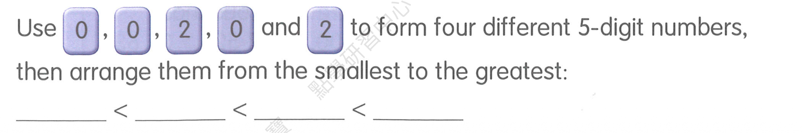
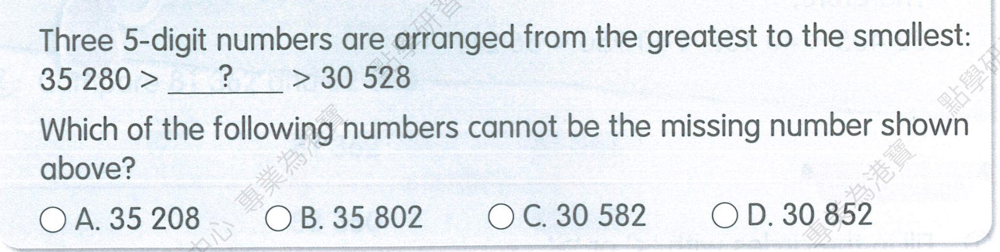
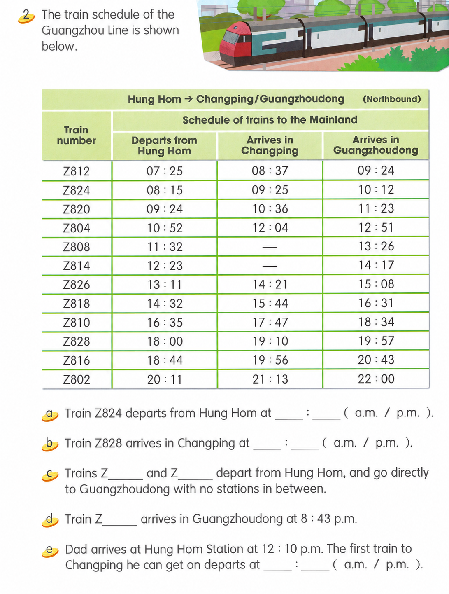
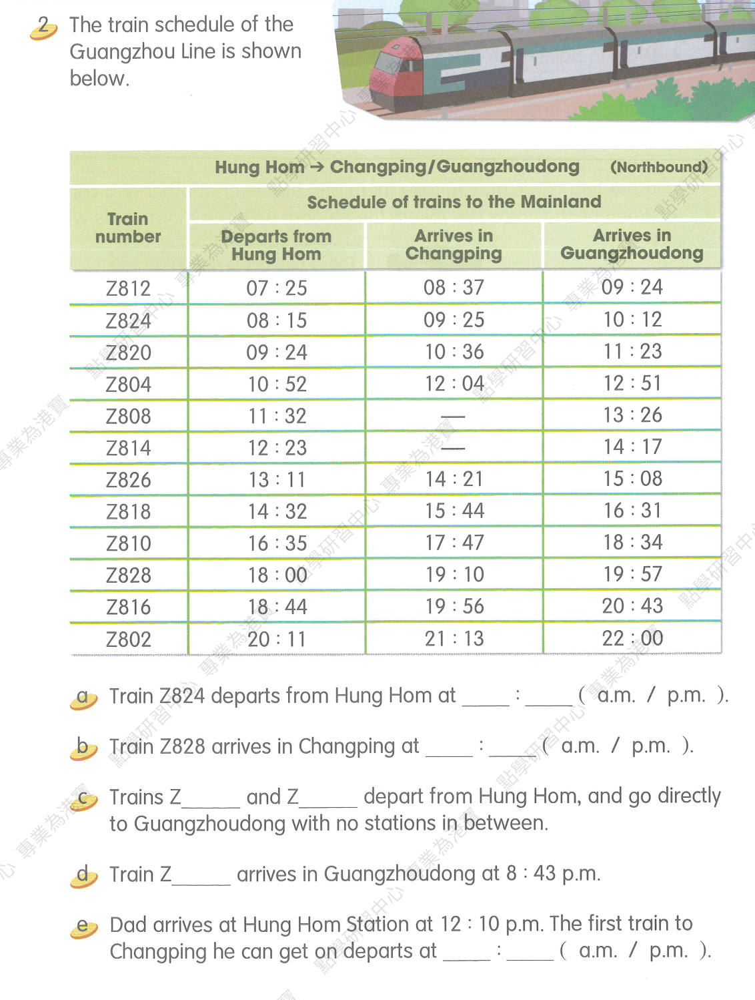
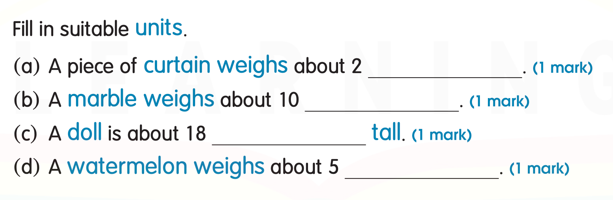
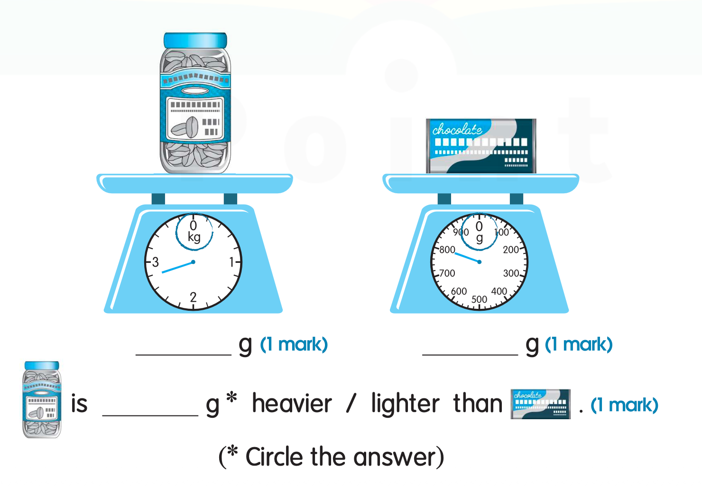

三年级 / Unit 1 五位数 / 组数与排序
MA-G3-2026-09-20-002 · 待抽取
查看答案与老师原图
20002 < 20020 < 20200 < 22000
首位必须为 2，另一张 2 分别在个位、十位、百位、千位，得到四种数。

每日随机抽 3 道，抽中即出库，抽完自动开始新一轮，不看批改结果；抽完全部重新入池，同日不重复。第 8 轮，共 22 组，待练 5 组，已抽取 17 组。
20002 < 20020 < 20200 < 22000
首位必须为 2，另一张 2 分别在个位、十位、百位、千位，得到四种数。


B. 35 802
35802 大于上限 35280，不能填入；A、C、D 均在两端之间。原文答案 C 已纠正为 B。


(a) 8:15 a.m.; (b) 7:10 p.m.; (c) Z808 and Z814; (d) Z816; (e) 1:11 p.m.
Z824 departs08:15. Z828 reaches Changping19:10. Z808/Z814 show dashes at Changping. Z816 arrivesGuangzhoudong20:43. At12:10 Z814(12:23) does not stop atChangping, so next valid departureZ82613:11=1:11p.m. 老师原答案(e)13:11 p.m.混用24小时制，按空格要求更正为1:11 p.m.，原文归档保留。


(a) kg; (b) g; (c) cm; (d) kg
Typical curtain mass2kg, marble10g, doll height18cm, watermelon5kg are reasonable and match mass versus length dimensions.


2800 g; 800 g; 2000 g, heavier
Jar scale0.2kg divisions reads2.8kg=2800g. Chocolate scale reads800g. Difference2800−800=2000g; jar is heavier. 老师原答案未列heavier/lighter选择，按两秤读数补heavier。
